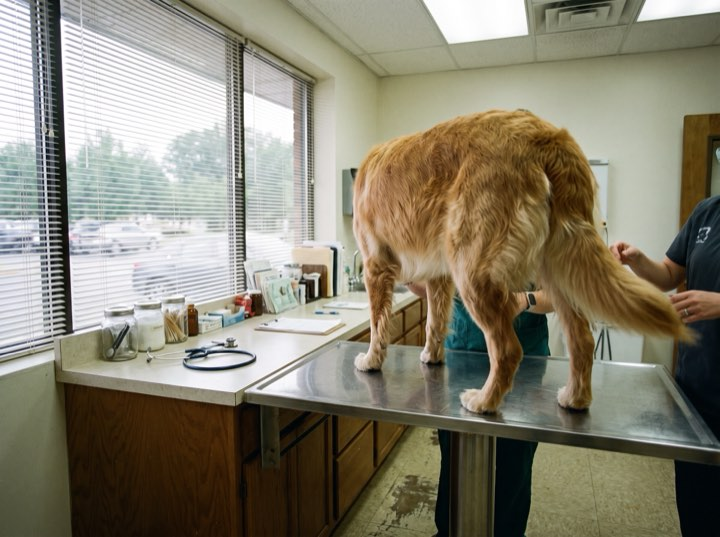
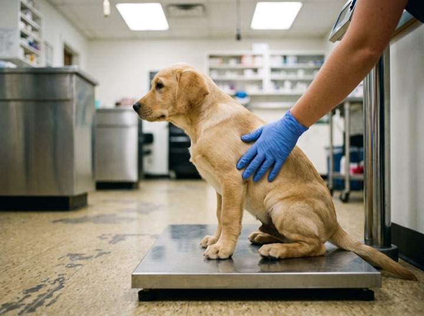
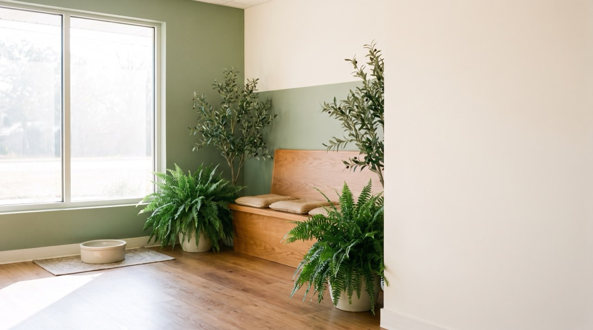

Priced on the page
The ordinary things, and where they happen.
Vaccinations, dental, the puppy visit. The rooms the prices at the top refer to.





Accepting new patients

Full-service small animal care with online booking and Saturday hours. Exams, vaccines, dentals, spays and neuters have their prices printed on this page, because nobody should have to ring to find out what a check-up costs.
Services
Routine to surgical, with the same team seeing your animal each time wherever we can manage it.
Annual exams, vaccines and parasite prevention on a schedule we track for you, so you get a reminder rather than a guilty realisation.
First visit free. Everything the first year needs bundled at a set price, including spay or neuter and microchipping.
Under anaesthetic with full monitoring and dental radiographs. Most dental disease is invisible above the gumline.
In-house lab, digital radiography and ultrasound, so most answers come the same visit rather than next week.
Results
Process
Especially for a first pet, where nobody tells you what actually happens.
Pick a real slot on a real calendar, any hour. You get a confirmation, not a promise to call you back.
Bring any records you have. First visits run long on purpose, because we'd rather answer everything now.
You get a written care plan with costs before anything is done, and we'll tell you what can wait.
Reminders when things are due, refills online, and a direct line for the questions that feel too small to phone about.
Priced on the page
Vaccinations, dental, the puppy visit. The rooms the prices at the top refer to.


Accepting new patients, same-day sick slots held daily, and the routine prices published so there is no surprise at the desk.
Emergencies after hours: call and our recording routes you to the on-call emergency hospital.